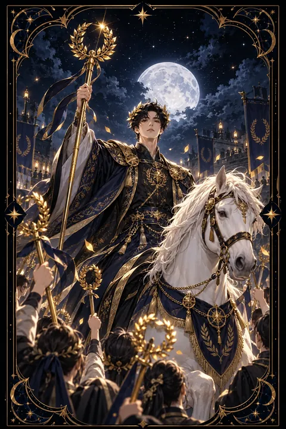

완드 6 카드 — 환호 속에 돌아오는 승리
완드 6 카드 한눈에 보기
완드 6 카드 상징 읽기

동네보살의 카드 그림은 전통 라이더–웨이트 덱의 뜻을 새 그림으로 옮긴 것입니다. 아래 상징 설명은 전통 덱의 그림을 기준으로 합니다.
완드 6에는 머리에 월계관을 쓴 기수가 흰 말을 타고 사람들 사이를 행진하는 모습이 그려져 있습니다. 그가 든 지팡이 끝에도 월계수 화환이 매달려 있어 이 행진이 승리를 알리는 개선 행렬임을 보여 줍니다.
흰 말은 순수한 힘과 당당함을 상징하며 초록빛 마구는 성장과 번영을 뜻합니다. 말을 탄 인물은 주변 사람들보다 높은 자리에 있어 공로를 인정받고 주목받는 위치에 섰음을 나타냅니다.
기수를 둘러싼 군중은 저마다 지팡이를 치켜들고 환호합니다. 이들은 승리가 혼자만의 것이 아니라 지지하고 함께한 사람들 덕분이라는 점을 떠올리게 합니다. 월계관은 노력 끝에 얻은 영예이며 이 카드는 공개적인 성공과 좋은 평판을 뜻합니다. 인물이 앞을 똑바로 바라보는 시선에는 흔들림 없는 확신이 담겨 있습니다.
완드 6 카드 정방향 뜻
정방향 완드 6은 노력의 결과가 드러나 사람들에게 인정받는 시기를 뜻합니다. 경쟁에서 이기거나 목표를 달성하거나 좋은 소식을 전해 듣는 등 공개적인 성공이 찾아오기 쉽습니다.
이 카드는 자신감을 강조합니다. 칭찬을 받을 때 지나치게 겸손해하기보다 스스로의 성취를 인정하는 것이 다음 도전을 위한 힘이 됩니다. 앞장서서 사람들을 이끄는 역할을 맡아도 좋은 흐름입니다.
다만 승리의 순간일수록 곁에서 도와준 사람들을 기억하는 태도가 중요합니다. 공을 나누고 감사를 표현하면 평판은 더 단단해지고 지지하는 사람도 늘어납니다. 좋은 기세가 이어질 때 다음 목표를 정해 두면 성공의 흐름을 오래 유지할 수 있습니다. 칭찬받은 경험을 기록해 두면 훗날 자신감이 흔들릴 때 다시 꺼내 볼 든든한 힘이 됩니다.
완드 6 카드 역방향 뜻
역방향 완드 6은 기대했던 인정이나 보상이 늦어지거나 돌아오지 않는 상황을 보여 줍니다. 열심히 일했는데 공이 다른 사람에게 돌아가거나 결과가 주목받지 못해 서운할 수 있습니다.
다른 한편으로는 성공에 취해 교만해진 모습을 경고하기도 합니다. 칭찬에 기대어 주변 사람을 소홀히 대하면 지지가 금세 흩어질 수 있습니다. 반대로 작은 실패 하나에 자신감이 꺾여 스스로를 과소평가하는 모습 역시 이 카드가 짚는 부분입니다.
남의 박수에 흔들리지 않는 중심을 세우는 것이 해법입니다. 자신이 해낸 일을 기록으로 정리해 두고 필요한 자리에서 차분히 알려 보세요. 도움을 준 사람들에게 먼저 감사를 전하면 흩어졌던 신뢰와 인정이 다시 모이기 시작합니다. 결과만큼 과정에서 배운 것도 소중한 성과라는 점을 기억해 두세요.
연애에서 완드 6 카드
솔로라면 자신감이 매력으로 드러나 주변의 관심을 받기 쉬운 시기입니다. 눈길이 가는 상대에게 당당하게 다가가 보세요. 모임이나 행사에서 돋보이는 기회가 생기고 좋은 인상을 남기기 쉽습니다.
사귀는 사람이 있다면 상대가 당신을 자랑스러워하고 관계가 주변의 축복을 받는 흐름입니다. 상대가 잘한 일을 아낌없이 박수로 맞아 주면 유대가 더 깊어집니다. 다만 관계 안에서 누가 더 우위에 있는지 겨루려는 태도는 피하는 것이 좋습니다. 역방향으로 뽑혔다면 상대가 노력을 알아주지 않아 서운할 수 있으니 인정받으려 애쓰기보다 원하는 것을 솔직하게 표현해 보세요. 겉으로 보이는 모습보다 둘만의 편안함을 우선하는 것이 좋습니다. 둘이 함께 이룬 작은 성취를 기념하는 시간도 관계에 활력을 더해 줍니다.
재회·속마음 질문에서 완드 6 카드
재회 질문에서 완드 6이 나오면 당신이 한층 성장한 모습으로 상대 앞에 설 수 있다는 뜻입니다. 헤어진 뒤 이룬 성취나 달라진 자신감이 상대의 관심을 다시 끌 가능성이 있습니다. 자연스럽게 근황이 전해지는 계기를 만들어 보세요. 다만 상대에게 보여 주려는 목적만으로 움직이면 진정성이 흐려질 수 있습니다. 역방향이면 자존심 싸움이 재회를 가로막기 쉬우니 누가 먼저 숙이느냐를 따지지 않는 태도가 필요합니다. 연락이 닿는다면 자랑보다 그사이 겪은 일과 새로 깨달은 점을 담담하게 이야기해 보세요. 겸손하게 건넨 말이 화려한 성과보다 상대의 마음을 더 크게 움직입니다. 상대의 근황에도 관심을 보이며 대화의 균형을 맞추는 것이 좋습니다.
일·금전에서 완드 6 카드
일과 직장에서는 성과가 공개적으로 인정받는 흐름입니다. 승진이나 수상이나 좋은 평가처럼 노력의 결실이 눈에 보이는 형태로 돌아올 수 있습니다. 리더 역할을 맡거나 팀을 대표해 발표할 기회가 생기면 적극적으로 나서 보세요. 함께한 동료들의 공을 함께 언급하면 신뢰가 한층 깊어집니다.
금전 면에서는 성과에 따른 보상이 들어오는 시기입니다. 좋은 평판이 새로운 수입 기회로 이어질 수 있습니다. 다만 성공의 기분에 들떠 과시성 지출을 늘리기보다 들어온 보상을 계획적으로 관리하는 편이 좋습니다. 인정받은 기세를 살려 다음 과제를 스스로 제안해 보면 역할이 한층 넓어질 수 있습니다. 칭찬받는 자리일수록 도와준 이름을 함께 불러 주시면 평판이 오래갑니다.
완드 6 카드는 예일까 아니오일까
경쟁을 이겨 내고 사람들의 인정을 받는 승리의 카드여서 바라는 일이 이뤄진다는 답으로 읽습니다. 거꾸로 놓이면 성과는 있어도 인정이 늦어지거나 교만이 걸림돌이 되어 조건부입니다.
자주 묻는 질문
완드 6 카드 역방향은 나쁜 뜻인가요?
역방향 완드 6은 기대했던 인정이나 보상이 늦어지거나 돌아오지 않는 상황을 보여 줍니다. 열심히 일했는데 공이 다른 사람에게 돌아가거나 결과가 주목받지 못해 서운할 수 있습니다.
완드 6 카드가 연애 질문에 나오면요?
솔로라면 자신감이 매력으로 드러나 주변의 관심을 받기 쉬운 시기입니다. 눈길이 가는 상대에게 당당하게 다가가 보세요. 모임이나 행사에서 돋보이는 기회가 생기고 좋은 인상을 남기기 쉽습니다.
타로 카드는 어떻게 뽑나요?
타로 카드 페이지에서 78장을 섞으면 그중 22장이 펼쳐집니다. 마음이 가는 세 장을 고르면 과거·현재·미래 자리에 놓이고, 한 장씩 뒤집어 자리와 방향에 맞는 풀이를 읽습니다. 정방향과 역방향은 섞는 순간 정해집니다.